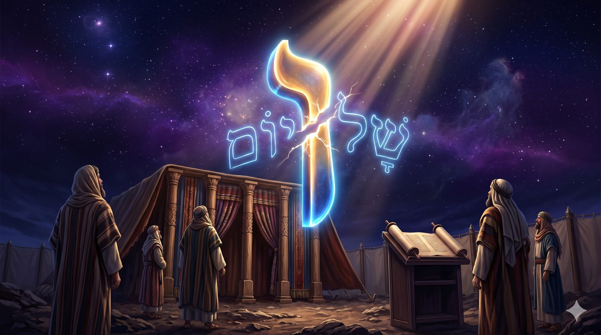
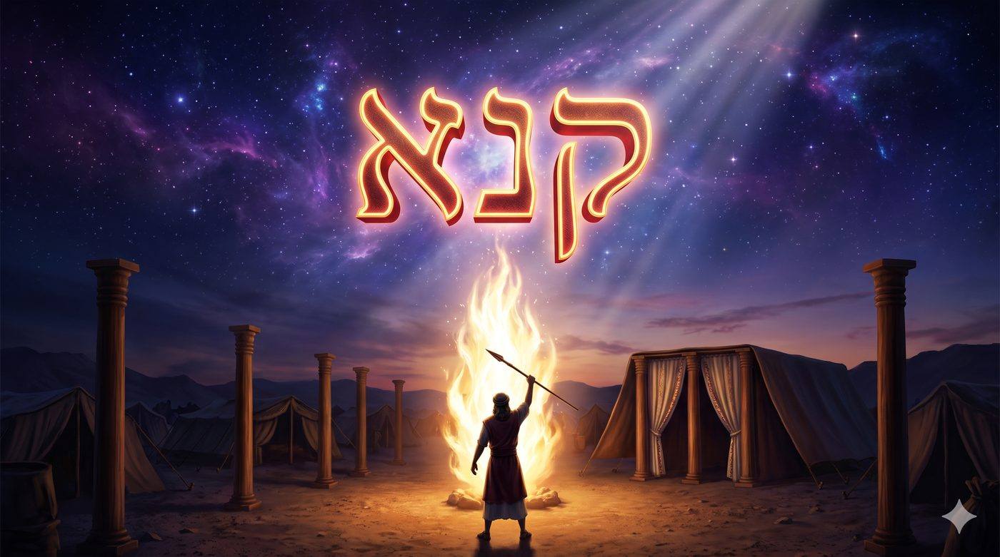
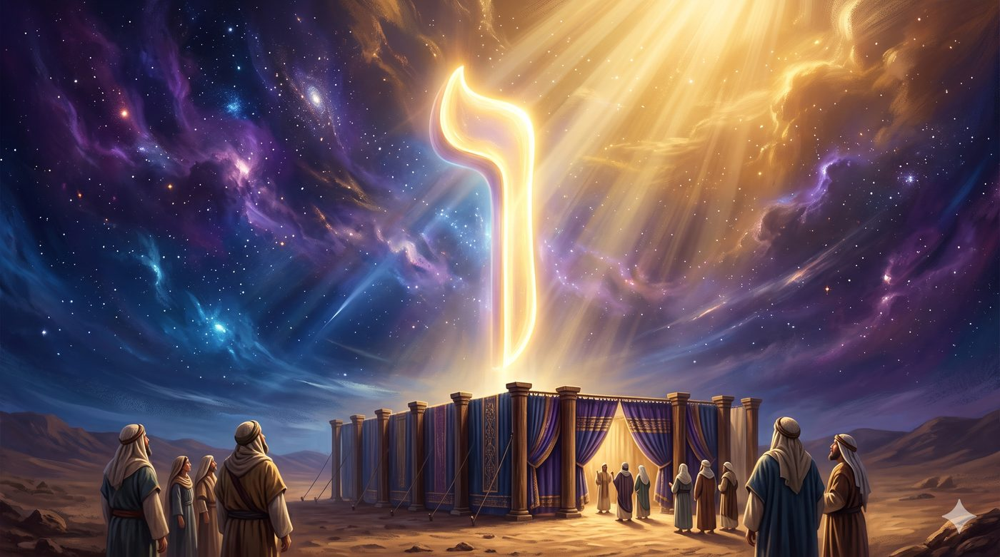
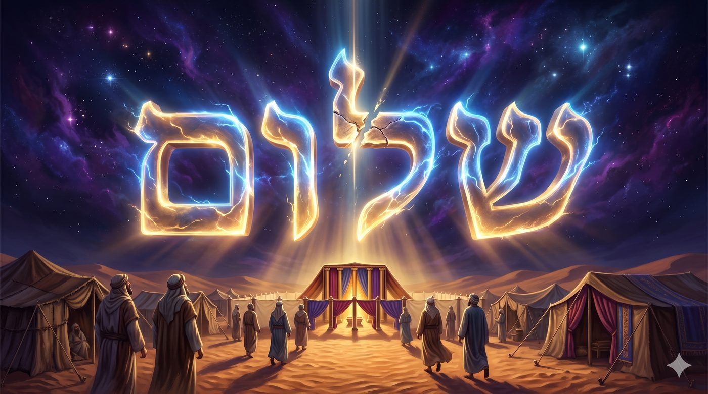
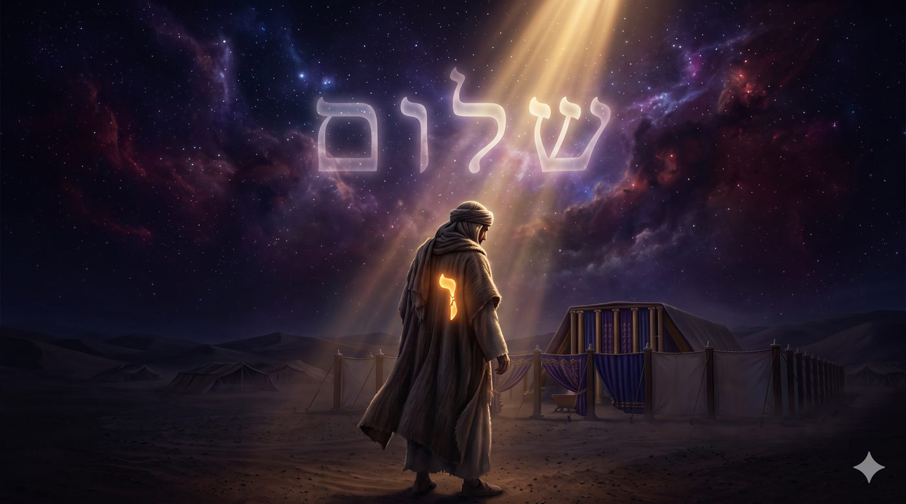
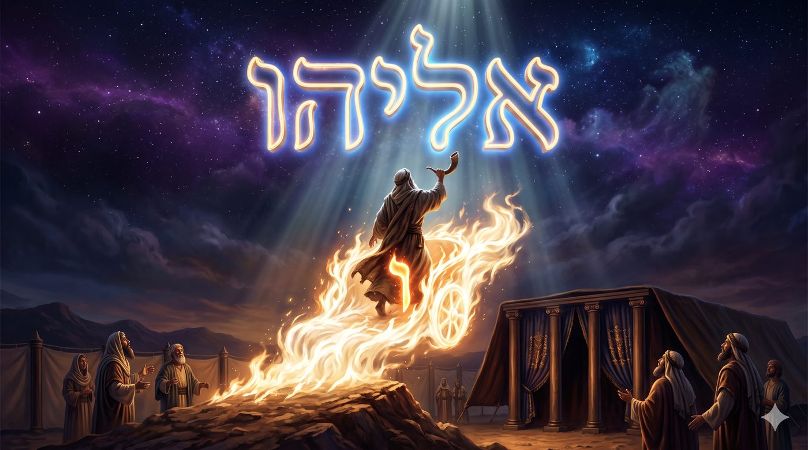

Réparer le vav de la paix
Pourquoi la plus haute récompense de la Torah, l'alliance de paix donnée à Pin'has, est-elle inscrite avec une lettre brisée ?
Tout commence dans la violence. À la fin de l'épisode de Bilaam, le peuple s'est laissé séduire par les filles de Moav et le culte idolâtre de Baal Peor. Une épidémie ravage alors le camp, et Zimri, prince de la tribu de Chimon, s'affiche publiquement avec Kozbi, princesse de Midian, au vu de Moshé et de toute l'assemblée pétrifiée. Alors Pin'has, petit-fils d'Aharon, se lève, prend une lance, et transperce les deux d'un seul geste, et là l'épidémie s'arrête net.

La réponse du Ciel tombe aussitôt, et elle est déconcertante. « Voici, Je lui donne Mon alliance de paix » (Bamidbar 25:12). Celui qui vient de tuer reçoit en récompense la paix, et même davantage : l'alliance d'un sacerdoce éternel. Un acte de sang couronné par le niveau le plus haut que l’être humain puisse accéder, la prêtrise et le chalom.
Mais le verset cache un secret apparent au sein du rouleau lui-même. Le mot chalom, la paix, s'écrit normalement שלום, avec un vav (la lettre ו) entier au milieu. Dans le Sefer Torah, ce vav du brit chalom de Pin'has est écrit coupé, brisé en son milieu. On l'appelle le vav ketia (le vav tranché). Cette volontaire fêlure est transmise de scribe en scribe, reproduite à l'identique, depuis le Sinaï, à tel point qu'un rouleau qui l'ignorerait serait invalidé.
Voilà le paradoxe que nous allons creuser. La plus haute récompense de la Torah, l'alliance éternelle de paix, découle d'un acte d'une violence extraordinaire, porté dans sa lettre même par une fracture. La paix donnée à Pin'has est une paix blessée, une paix déchirée. Pourquoi ? Que dit cette cassure que le mot entier ne dirait pas ?
Avec l'aide du Ciel et de nos maîtres, nous verrons pourquoi la paix de Pin'has naît d'un glaive, et pourquoi elle s'inscrit avec une lettre brisée, et que cette paracha nous enseigne une vérité mystique profonde : la paix n'est pas l'absence de conflit, elle est un lien, et tout lien tissé dans un monde non réparé garde une fêlure. Du couteau de Pin'has jusqu'au chofar d'Eliyahou qu'il deviendra, nous allons lire Pin'has comme un enseignement sur la paix : celle qui arrête le mal, celle qui le guérit, et celle, encore à venir, qui l'effacera.
• Le vav brisé : une lettre fêlée au cœur de l'alliance de paix
• La paix née du glaive : le feu de la kana'out
• Le vav, lettre du lien : la paix entre le Ciel et la terre
• Pourquoi le vav est coupé : la paix qui arrête sans guérir
• Notre vav intérieur : le zèle juste et la paix vraie
• Pin'has est Eliyahou : le vav qui ne meurt pas
• La délivrance : le vav refermé
Il faut d'abord regarder en face ce que Pin'has a fait, sans l'adoucir. De sa propre initiative, sans qu'aucun procès ni tribunal ne l'y autorise, il a ôté la vie à deux êtres. Dans n'importe quelle autre circonstance, ce geste serait un meurtre. La tradition le sait, et elle entoure cet acte d'une barrière de prudence inédite.

Le Talmud (Sanhédrin 82a) énonce une règle vertigineuse : kana'in pog'in bo, « les zélés le frappent ». Celui qui s'accouple publiquement avec une non-Juive dans la provocation, le zélé a le droit de l'abattre. Mais aussitôt, le Talmud ajoute une clause : si le coupable s'était défendu et avait tué le zélé, il ne serait pas condamné, car le zélé agissait en marge de la loi. Plus stupéfiant encore : « celui qui vient demander » s'il peut accomplir cet acte, « on ne le lui permet pas ». Le zèle n'est légitime que s'il jaillit avant toute question, car celui qui commence à délibérer et à calculer a déjà perdu le droit de frapper.
Pourquoi cette méfiance extrême envers un acte que le Ciel récompense pourtant ? Parce que la kana'out (le zèle, la jalousie sacrée) est une gevoura (la rigueur, la force qui tranche) à l'état pur, et que rien n'est plus dangereux qu'une rigueur sans frein. La même énergie qui, chez Pin'has, arrête une épidémie, peut, chez un autre, se muer en fanatisme et en orgueil, jusqu'à devenir une soif de violence déguisée en piété. La frontière est mince, et elle passe par un seul endroit : l'ego.
C'est ici que se joue tout le secret de Pin'has. Le Maharal (Netivot Olam) l'explique : le zèle n'est saint que lorsqu'il est entièrement vidé de soi. Pin'has ne tue pas par haine de Zimri, et son acte ne vise ni à s'affirmer ni à se faire un nom. Il agit dans un effacement total, traversé par une seule volonté qui n'est pas la sienne. Son geste n'ajoute rien à lui-même. C'est pourquoi il ne le souille pas. Une rigueur qui sert l'ego détruit celui qui la porte autant que sa cible ; une rigueur entièrement donnée à D.ieu se retourne en paix.
La sainteté du zèle ne se mesure pas à sa violence, mais à l'absence totale d'intérêt de celui qui l'exerce.
Pour comprendre pourquoi la récompense de Pin'has s'inscrit dans un vav, et pourquoi ce vav est brisé, il faut entendre ce qu'est cette lettre. Dans la tradition mystique, aucune lettre n'est neutre : chacune est un canal, une forme de lumière. Et le vav a une fonction unique.

Le vav, en hébreu, c'est d'abord le mot « et » : la lettre de la liaison, celle qui relie un mot au suivant et une proposition à l'autre, comme elle relie le ciel et la terre dans le premier verset de la Torah. Sa forme même évoque un trait vertical, un crochet semblable à une colonne qui descend d'en haut vers en bas. Sa valeur numérique est six, comme les six directions de l'espace, comme les six jours de la création reliés au septième. Le vav est à la fois le pont et le fil, l'épine dorsale qui tient ensemble ce qui, sans lui, resterait séparé.
Cette fonction de pilier n'est pas qu'une image, elle est inscrite dans la forme même du Sefer Torah. Les colonnes d'un rouleau de Torah commencent presque toutes par la lettre vav. On les nomme les vavei ha'amoudim (les crochets des colonnes), en écho aux crochets d'argent qui retenaient les piliers du parvis du Michkan (Chemot 27:10). Comme le crochet d'argent tenait les tentures suspendues, le vav d'encre tient les colonnes du texte sacré, ouvrant chaque pan et le reliant au précédent. Sur toutes les colonnes du rouleau, six seulement font exception et s'ouvrent sur une autre lettre, que la tradition retient par le verset בְּיָ-הּ שְׁמוֹ (Tehilim 68:5), “dans youd-hé est son nom”.
Ces six colonnes ne s'ouvrent pas par le vav de la liaison, elles s'enracinent directement dans le Nom youd-hé, la source cachée d'en-haut. Tout le reste de la Torah descend ensuite, colonne après colonne, par le vav qui fait passer cette source jusqu'au monde d'en-bas. La Torah entière est, à la lettre, tenue par des liens.
Dans la structure des attributs divins, le Ari Z"L identifie le vav à l’attribut de Tiferet (l'harmonie, la beauté). Or Tiferet ne ressemble à aucun autre attribut : il est précisément celui qui marie le 'hessed (la bonté qui se donne sans limite) et la gevoura (la rigueur qui retient et qui tranche). Tiferet tient les deux à la fois, en équilibre, et c'est de cet équilibre que naît l'harmonie. Le vav, c'est l'attribut qui réconcilie les contraires.
Et dans le Nom divin lui-même, youd-hé-vav-hé, le vav occupe une place centrale. Le youd et le premier hé (youd-hé) sont la source cachée, 'Hokhma la sagesse et Bina le discernement, les mondes d'en-haut que l'œil ne perçoit pas. Le vav est le canal de six degrés, des six émotions, qui fait descendre leur lumière jusqu'au hé final, la royauté, Malkhout, le monde d'en-bas où nous vivons. Dans le Nom même, le vav est donc ce qui fait passer le Ciel dans la terre, et c'est pour cela qu'il est la lettre de la délivrance : car délivrer, c'est rétablir le passage entre le spirituel et le matériel. C’est permettre au spirituel et au matériel de se connaître (par l’attribut du Daat qui infiltre les 6).
Et c'est là que le mot chalom livre son sens profond. Nous croyons que la paix, c'est le calme, l'absence de tension, le silence des armes. La mystique juive enseigne l'inverse. Chalom vient de la racine chalem, « entier, complet ». Loin de se réduire à la disparition des forces opposées, la paix est le lien qui les fait tenir ensemble sans qu'aucune n'écrase l'autre. Faire la paix, c'est alors trouver le vav qui relie le 'hessed et la gevoura, le don et la rigueur, sans supprimer le conflit ni annuler aucune des deux forces.
La paix n'est pas l'absence de conflit, elle est le lien qui tient ensemble des forces opposées sans en sacrifier aucune.
Nous tenons maintenant les deux bouts du raisonnement. Pin'has reçoit la paix parce que sa gevoura, entièrement donnée, a rétabli un équilibre rompu. Et cette paix s'inscrit dans un vav, la lettre du lien réconcilié. Reste la question de la paracha : pourquoi ce vav est-il brisé ?
La réponse touche au cœur de la condition de l'exil. Le Zohar (paracha Pin'has) lit dans le vav ketia le signe d'une paix réelle mais inachevée. Pin'has a arrêté l'épidémie en refermant la brèche ouverte suite à l’idolatrie de Baal Peor, et il a ainsi sauvé le peuple d'une destruction immédiate. Mais une paix obtenue par la lance reste une paix qui porte la marque de la lance. Elle a stoppé le mal sans encore le guérir. Le vav coupé dit exactement cela : ce lien-là est vrai, il est même une alliance éternelle, mais le trait n'est pas continu, la réconciliation n'est pas totale, quelque chose attend encore d'être recousu.

Et la mystique va plus loin encore. Si le vav de la paix est brisé, c'est parce que le Nom divin lui-même demeure, pour l'instant, incomplet. Sur la guerre contre Amalek, le verset dit ki yad al kes ya, car sa main est sur le trone de youd-hé « כִּי יָד עַל כֵּס יָ-הּ » (Chemot 17:16), et Rachi enseigne que le Nom n'est pas entier et le Trône n'est pas entier tant que la semence d'Amalek n'est pas effacée : il manque alors au Nom youd-hé-vav-hé ses dernières lettres, et il ne reste que youd-hé. Le vav absent du Nom, le vav brisé de la paix de Pin'has, et le vav qu'Eliyahou laisse en gage chez Yaakov (voir ci après) sont une seule et même lettre suspendue : le canal de la liaison entre le Ciel et la terre, tenu en attente jusqu'à la délivrance.
Le lien avec la fin de la paracha de Balak est ici direct et lumineux. Bilaam, ne pouvant maudire Israël de l'extérieur, avait conseillé de l'attaquer par le dedans, par la séduction de Baal Peor. La brèche fut ouverte par la ruse, et le peuple s'y est engouffré. Pin'has la referme par le fer. Mais une plaie qu'on cautérise n'est pas une plaie guérie : la cicatrice demeure. La paix de Pin'has est la paix de celui qui a arrêté l'hémorragie, en attendant le médecin qui refermera vraiment la chair.
Il y a là une vérité que nous portons tous. Il existe une paix qui consiste à empêcher le pire en tenant le mal à distance, et à maintenir un équilibre fragile sans se bercer d'illusions. Elle n'atteint pas encore la paix parfaite, celle où le conflit lui-même aurait disparu, mais elle forme déjà une alliance que le Ciel scelle comme telle. Le vav brisé ne marque aucun échec, il énonce l'honnêteté d'une paix qui se sait encore incomplète.
Il existe une paix qui arrête le mal sans encore le réparer, et le Ciel la reconnaît déjà comme une alliance.
Cette histoire de lance et de lettre brisée pourrait sembler lointaine. Elle décrit pourtant, avec une précision déconcertante, un combat que chacun mène en lui-même. Car nous portons tous une kana'out et nous cherchons tous un chalom, et le plus souvent nous nous trompons sur les deux.

Il y a en nous une force qui s'indigne et qui veut trancher, une force qui ne supporte pas le mal et voudrait le frapper. Cette force est précieuse : une âme incapable d'indignation est une âme éteinte. Mais elle est aussi la plus trompeuse, car l'ego se déguise volontiers en zèle. Nous croyons défendre la vérité quand nous défendons notre orgueil ; nous croyons brûler pour le Ciel quand nous brûlons pour avoir raison. Le test de Pin'has vaut pour nous : un zèle qui me grandit, qui me met en avant, qui se nourrit du regard des autres, n'est pas un zèle saint. Seul l'est celui qui me laisse aussi petit après qu'avant.
Et il y a en nous une soif de paix, de justice, de vérité, mais nous la confondons souvent avec la fuite. Une paix qui consiste à tout taire, à ne jamais affronter et à laisser le mal s'installer pourvu qu'on ait le calme, n'est qu'une démission déguisée, bien loin du chalom de la Torah. Le vrai chalom est plus exigeant : il tient ensemble la fermeté et la douceur, il sait trancher quand il faut et relier ensuite. Il ressemble au vav, qui descend droit comme une colonne et qui pourtant relie.
Le travail intérieur que la paracha nous demande tient en un équilibre, qui ne penche ni vers l'indignation qui détruit ni vers la mollesse qui abandonne. Garder le feu de la kana'out et le vider de tout ego ; chercher le chalom sans en faire une lâcheté. Redresser, geste après geste, le trait de notre propre vav intérieur, ce lien fragile entre la force et la paix qui passe par le milieu de chacun de nos jours.
Le zèle juste laisse l'ego à terre, et la paix vraie n'est jamais une fuite : l'un tranche sans s'enfler, l'autre relie sans abandonner.
La récompense de Pin'has ne s'arrête pas à la paix et au sacerdoce. La tradition lui ajoute un prolongement qui change tout le sens de l'histoire. Le Targoum Yonatan, sur notre verset, écrit que Pin'has recevra une vie sans fin et qu'il sera le messager de la délivrance à la fin des temps. En d'autres termes : Pin'has, c'est Eliyahou, le prophète qui ne meurt pas, qui monte au Ciel sur son char de feu et réapparait à sa guise, faisant fi des règles de l’espace-temps.

Le Ari Z"L (Sha'ar HaGilgulim) développe ce mystère avec une profondeur saisissante. Au moment de son acte, l'âme de Pin'has reçut en elle (en complément) les âmes de Nadav et Avihou, les deux fils d'Aharon morts d'avoir approché le feu divin de trop près, par un excès non maîtrisé. Pin'has porte désormais ce feu, mais réparé, ordonné, donné. Le même élément qui avait consumé les fils d'Aharon devient en lui une force de vie. Et cette âme, qui a su transformer le feu destructeur en feu sacré, ne connaîtra pas la mort ordinaire : elle traversera l'histoire sous le nom d'Eliyahou.
Le lien est d'une beauté vertigineuse. Eliyahou, dans le livre des Rois, est lui aussi le zélé par excellence : « J'ai été pris d'un zèle ardent pour l'Éternel » (Mela’him I, 19:10). Il affronte les prophètes de Baal et fait descendre le feu du ciel. Et c'est lui, le prophète du zèle, que la tradition désigne comme l'annonceur du Machia'h, celui qui « ramènera le cœur des pères vers les fils, et le cœur des fils vers les pères » (Malakhi 3:24). Le héraut de la paix finale est le même que le zélé du Carmel. Celui qui a su trancher par le feu sera celui qui recoudra les cœurs.
La tradition scelle ce lien dans l'orthographe même des noms. Rachi le relève (Vayikra 26:42) : à cinq reprises le nom de Yaakov s'écrit avec un vav en trop, יַעֲקוֹב, et à ces mêmes cinq reprises le nom d'Eliyahou perd le sien, écrit אֵלִיָּה. Yaakov a pris le vav d'Eliyahou comme gage, éravon, qu'il viendra annoncer la délivrance de ses enfants. Et ce gage n'est pas une image métaphorique. On scelle un engagement en donnant la main, et le vav, ce trait droit, a la forme d'un doigt : cinq vav pour les cinq doigts d'une main. Yaakov a saisi la main d'Eliyahou, et celui qui a laissé sa main en gage est tenu de revenir la reprendre. La lettre manquante ne trahit aucun défaut : elle est une dette, et un homme n'abandonne jamais son propre nom.
Plus profondément encore, ce gage est un secret du Nom divin. Yaakov porte l’attribut de Tiferet, le vav du Nom divin en personne, le pilier du milieu dont les maîtres disent que son image est gravée sur le Trône. Lui confier le vav d'Eliyahou, c'est déposer le canal même de la liaison, au cœur d'Israël. La garantie de la délivrance n'est donc pas suspendue quelque part dans le Ciel, elle est cousue dans le nom du peuple. Yaakov-Israel porte en lui, dans la lettre surnuméraire de son nom, la caution qu'Eliyahou reviendra. Et le jour où le prophète reprendra son vav, il rejoindra le vav et le hé au youd et au hé : le Nom youd-hé redeviendra youd-hé-vav-hé, le Ciel rejoindra la terre, et la paix sera enfin entière, remplie de connaisance.
C'est tout le secret du vav brisé qui se dévoile. La lettre coupée n'attend pas n'importe qui pour être refermée : elle attend précisément celui qui l'a tracée. L'âme de Pin'has, devenue Eliyahou, traverse les siècles avec, en elle, la mission d'achever le trait qu'elle a commencé. Le zélé qui a su arrêter le mal reviendra pour le guérir.
La même âme qui a su trancher par le feu reviendra, à la fin, pour recoudre ce qu'elle avait seulement arrêté.
Le vav de la paix attend donc sa complétion, et la paracha nous dit déjà par quelle main elle viendra. Tant que dure l'exil, notre paix reste la paix de Pin'has : une paix qui arrête le mal et tient le pire à distance, qui maintient l'équilibre sans pouvoir encore effacer la blessure. Le trait reste coupé, mais il n'est pas coupé pour toujours.
Les maîtres enseignent qu'au temps de la délivrance, chalom s'écrira enfin entier. Eliyahou, qui est Pin'has, viendra annoncer une paix d'un autre ordre, une paix qui dissoudra le mal au lieu de seulement le contenir. Le lien interrompu entre le Ciel et la terre, ce vav qui descend et qui se brise à mi-chemin, se prolongera jusqu'en bas sans rupture. Le don et la rigueur, le 'hessed et la gevoura, cesseront d'être deux forces qu'il faut péniblement tenir ensemble pour ne former qu'une seule lumière. Alors la paix deviendra un état, là où elle n'était qu'un effort.
Et ce jour-là se prépare maintenant, dans chacun de nos gestes de paix véritable. Chaque fois que nous refusons l'indignation qui flatte l'ego, chaque fois que nous tranchons le mal sans nous enfler, chaque fois que nous relions ce qui était divisé sans rien abandonner de l'exigence, nous redressons un peu le trait coupé. Nous écrivons, vav après vav, lettres après lettres, le vav que la délivrance refermera : la paix qui n'arrête plus le mal, mais qui l'efface.
| ה' עֹז לְעַמּוֹ יִתֵּן ה' יְבָרֵךְ אֶת עַמּוֹ בַשָּׁלוֹם | L'Éternel donnera la force à Son peuple, l'Éternel bénira Son peuple par la paix (Tehilim 29:11) |
Chabat Chalom !
De nous accorder le zèle juste, celui qui tranche le mal sans nourrir l'orgueil, et la paix vraie, celle qui relie sans jamais abandonner. Et puissions-nous voir bientôt le jour où Eliyahou viendra refermer le vav de la paix, et où l'Éternel bénira Son peuple par une paix enfin entière.
| Torah | Talmud |
| Bamidbar 25:10-15, l'alliance de paix de Pin'has et le vav brisé ; 25:1-9, Baal Peor, Zimri et Kozbi ; 26, le second recensement. Chemot 27:10, les crochets des piliers du Michkan (vavei ha'amoudim). | Sanhédrin 82a, « kana'in pog'in bo », la loi du zélé ; Kiddouchin 66b, le sacerdoce de Pin'has. |
| Nevi'im | Rishonim |
| Melakhim I 19:10, le zèle d'Eliyahou ; Malakhi 3:23-24, Eliyahou annonceur de la délivrance. Chemot 17:16, כי יד על כס יה, le Nom et le Trône incomplets jusqu'à l'effacement d'Amalek. | Rachi, Bamidbar 25:11-12, l'alliance de paix ; Rachi, Vayikra 26:42, le vav d'Eliyahou pris par Yaakov en gage de la délivrance ; Rachi, Chemot 17:16, le Nom amputé en exil ; Targoum Yonatan, Pin'has est Eliyahou. |
| Mystique | Hassidout |
| Zohar, Pin'has, le vav ketia et la paix inachevée ; Ari Z"L, Sha'ar HaGilgulim, les âmes de Nadav et Avihou en Pin'has, Pin'has-Eliyahou ; Mégalé Amoukot (R. Nathan Nata Shapira), Pin'has soumet af ve'héma, le feu réparé et la vie sans fin par l'alliance ; le vav du Nom (youd-hé / youd-hé-vav-hé) comme canal de la liaison ; Tehilim 68:5, les six colonnes enracinées dans youd-hé (בי"ה שמו), dont מַה טֹּבוּ. | Maharal, Netivot Olam, le zèle vidé de l'ego ; le chalom comme lien qui réconcilie 'hessed et gevoura. |
• La gematria de Pin'has. יוֹסֵף (156) + אֵלִיָּהוּ (52) = פִּינְחָס (208). Pin'has réunit en lui le gardien de l'alliance, Yossef le tsaddik yessod olam, et Eliyahou (Guilgoulei Néchamot, R. Menahem Azaria de Fano).
• Eliyahou = 52 = le Nom « Ban ». אֵלִיָּהוּ vaut 52, comme le Nom youd-hé-vav-hé dans son épellation « Ben » (youd, hé-hé, vav-vav, hé-hé = 52), le Nom de Mal’hout et du birour, le tri des étincelles saintes tombées dans les écorces. Eliyahou est le maître de ce tri, celui qui l'achève à la veille de la délivrance.
• Eliyahou, l'ange de l'alliance. Parce que Pin'has-Eliyahou a défendu le brit par le feu, il devient le mala’h habrit (Malakhi 3:1), présent à chaque circoncision : c'est le sens du kissé chel Eliyahou, le siège qu'on lui réserve. Le gardien de l'alliance veille désormais sur chaque alliance scellée en Israël.
• Le yi'houd du vav et du hé. Selon le Ari Z"L, la délivrance est l'union (yi'houd) des 6 attributs (“ele vav) et de Mal”hout (le hé final), du Saint béni soit-Il et de Sa Chekhina. Refermer le vav brisé, c'est faire descendre le vav jusqu'au hé : le Ciel qui épouse la terre.